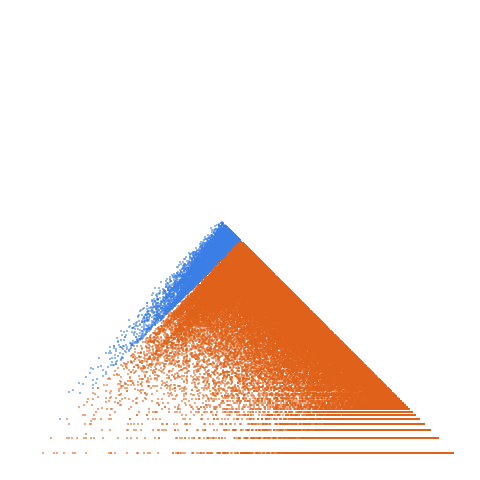

Sum of totient function: a(n) = Sum_{k=1..n} phi(k), cf. A000010

Open in the 3-D viewerA002088 on the OEIS
| Terms | 100,000 (n = 0 … 99,999) |
|---|---|
| Decomposable (a > 2d) | 99,994 |
| Level class, k > L | 87,342 · 87.35 % |
| Weight class, k ≤ L | 12,652 · 12.65 % |
| Ties, k = L | 4 |
| On the level line L = 1 | 0 |
| Forced level, l ≤ d² | 45,973 |
| Range of a(n) | 0 … 3,039,610,754 |
| Range of the jump d | 1 … 99,990 |
| Largest weight k, level L | 1,519,415,519, 133,258 |
a(n) = sum of phi(k) for k <= n, from a(0) = 0; a ~ 3n^2/pi^2 and d = phi(n+1) <= n, so the sequence is nearly quadratic. l <= d^2 on 45.98 % of terms and 87.35 % are level-classified. For n >= 2 both a and d are even, so 2 | l. Since a > 3d on every decomposable term, l/2 > d, so k <= l/2 and L >= 2: the line L = 1 is empty.
The decomposition
Every term of a strictly increasing sequence is written a(n) = k(n)·L(n) + d(n): the jump d = a(n+1) − a(n), the weight k the least divisor of a − d greater than d, the level L = (a − d)/k. A term decomposes when a > 2d; it is in the level class when k > L and in the weight class when k ≤ L. See decompwlj.com and arXiv:0711.0865.